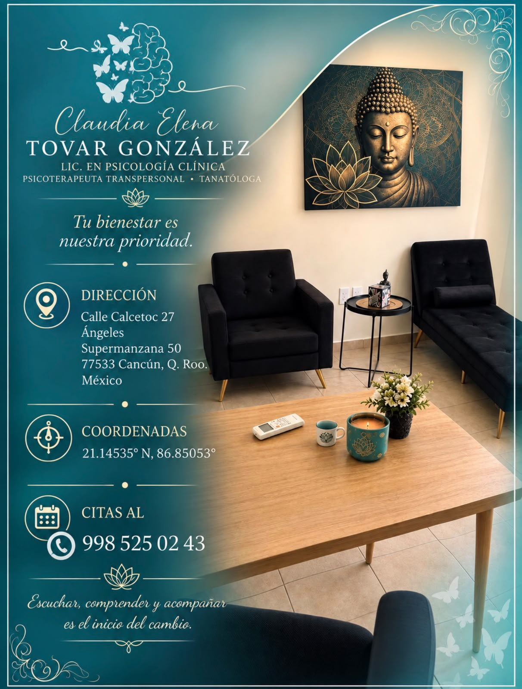
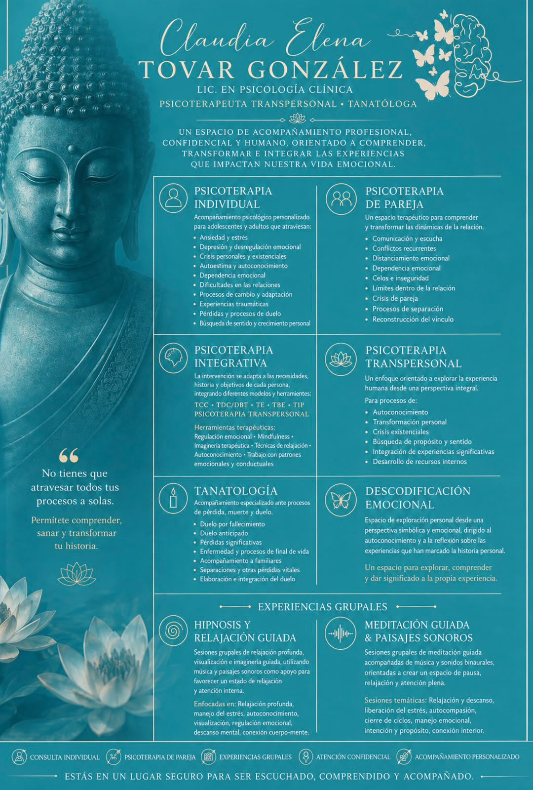

Psicoterapia individual
Un espacio personalizado para trabajar ansiedad, estrés, autoestima, crisis personales, relaciones, pérdidas y procesos de cambio.
Psicología clínica · Psicoterapia · Tanatología
Acompañamiento profesional, confidencial y humano para adolescentes y adultos que desean comprender su experiencia emocional y construir nuevas herramientas para su bienestar.

Acompañamiento profesional
Un espacio personalizado para trabajar ansiedad, estrés, autoestima, crisis personales, relaciones, pérdidas y procesos de cambio.
Herramientas para mejorar comunicación, límites, escucha, manejo de conflictos y comprensión de las dinámicas de la relación.
La intervención se adapta a las necesidades de cada persona, integrando diferentes modelos y herramientas terapéuticas.
Un enfoque integral orientado al autoconocimiento, transformación personal, propósito y significado de experiencias importantes.
Acompañamiento especializado ante procesos de pérdida, muerte, duelo y transiciones vitales.
Sesiones de relajación guiada, hipnosis, meditación y paisajes sonoros enfocadas en pausa, atención interna y bienestar.
Experiencia grupal
Una pausa para escuchar lo que tu cuerpo, tu mente y tus emociones tienen que decirte.
Tu espacio de acompañamiento
El consultorio está diseñado para ofrecer un entorno tranquilo y acogedor durante cada sesión.

Blog de bienestar emocional
Señales frecuentes, estrategias de autocuidado y cuándo puede ser útil buscar acompañamiento profesional.
Leer artículo → 02 · Duelo y pérdidasUna mirada humana al duelo, sus cambios y algunas formas de acompañarte durante una pérdida significativa.
Leer artículo →“Escuchar, comprender y acompañar es el inicio del cambio.”
Agenda tu espacio
Solicita información y conoce el tipo de acompañamiento que puede ajustarse a tus necesidades.